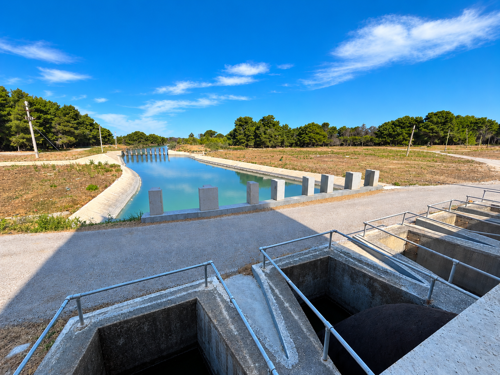

Irrigation & Drainage Management Information System
Platformë gjeohapësinore për planifikimin, monitorimin dhe mirëmbajtjen e infrastrukturës së ujitjes dhe kullimit.
Rrjeti në shifra
- Skema ujitese
- 412
- Kanale ujitëse I, II & III
- 5 260 km
- Sipërfaqe ujitëse
- 186 400 ha
- Sipërfaqe e kullueshme
- 297 177 ha
- Skema kullimi
- 238
- Kanale kullimi I, II & III
- 3 150 km
- Sipërfaqe kullimi
- 142 700 ha
- Bashki të mbuluara
- 46 nga 46
Harta publike
Infrastruktura e ujitjes në hartë
E konsultueshme pa llogari. Klikoni mbi hartë për të parë të dhënat e çdo objekti.
- Kanale ujitëse
- Kanale kulluese
- Rezervuarë
- Kufij bashkiakë